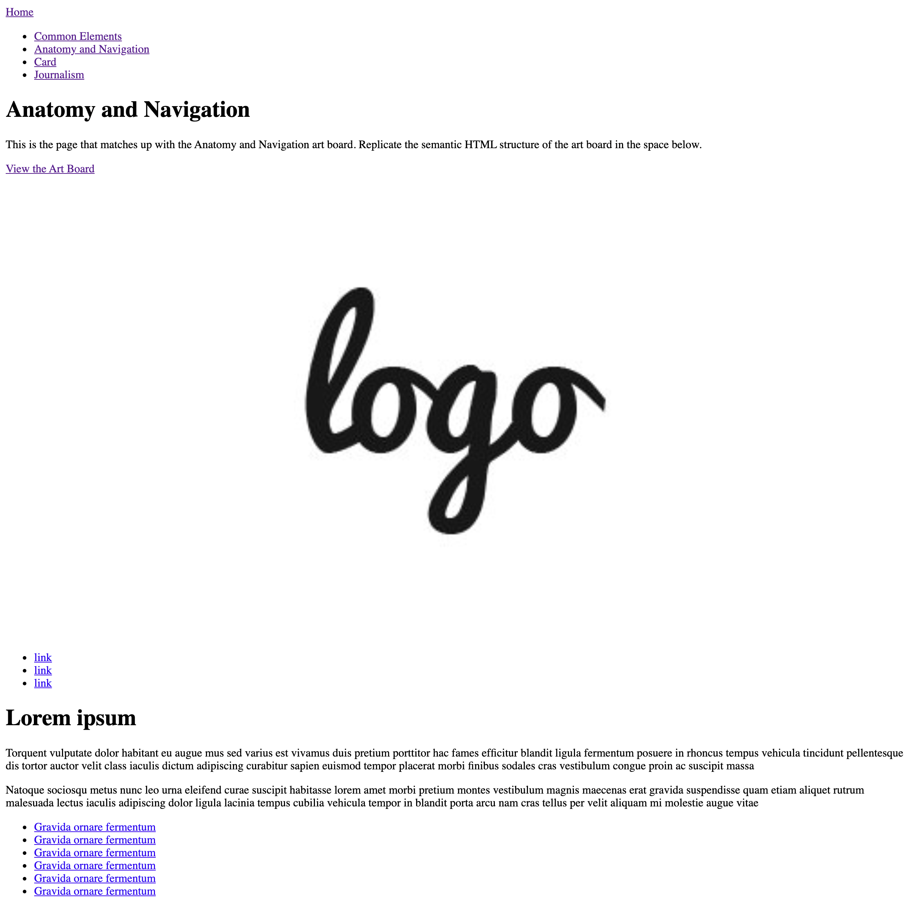
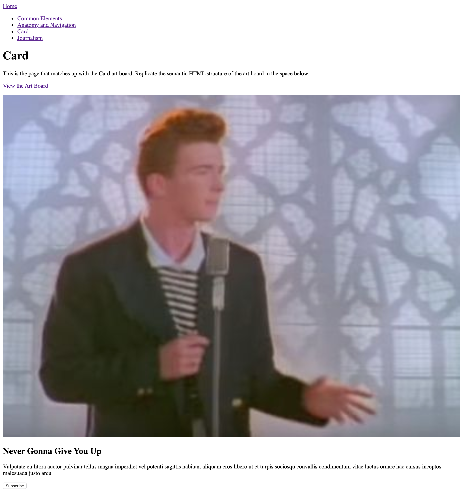

Now that we have practiced visually translating Adobe XD elements into HTML elements, let's take a modified answer key from the previous assignment and type it out in a real website.
We won't be focusing on style for this assignment, but we will in the future. For this reason, our website will look a little different.
I have listed screenshots of each page with a browser that is 1280 pixels wide. Your final submission should look just like them.
This is what the Common Elements HTML page should look like.

This is what the Anatomy and Navigation HTML page should look like.
This is what the Card HTML page should look like.
This is what the Journalism HTML page should look like.